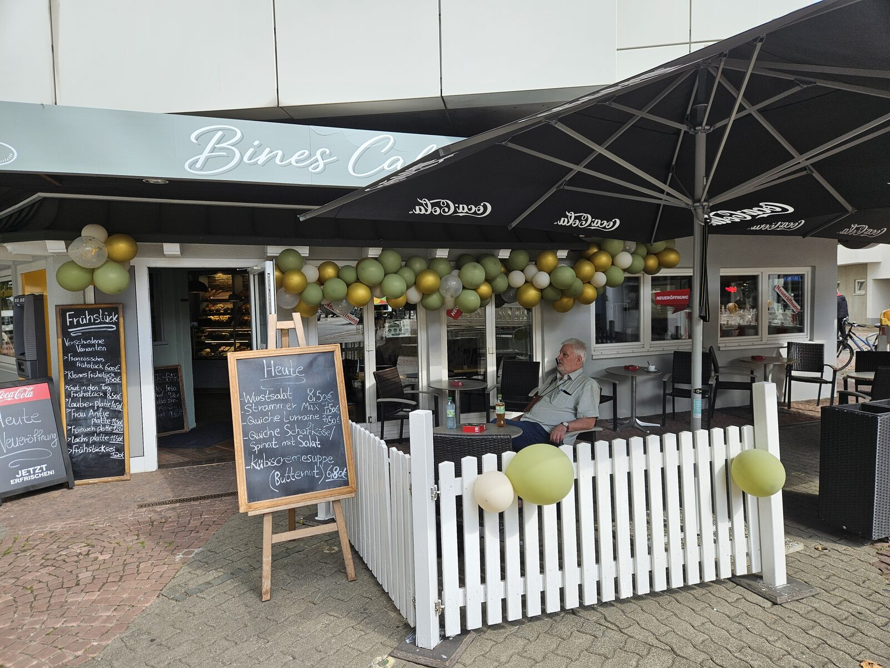
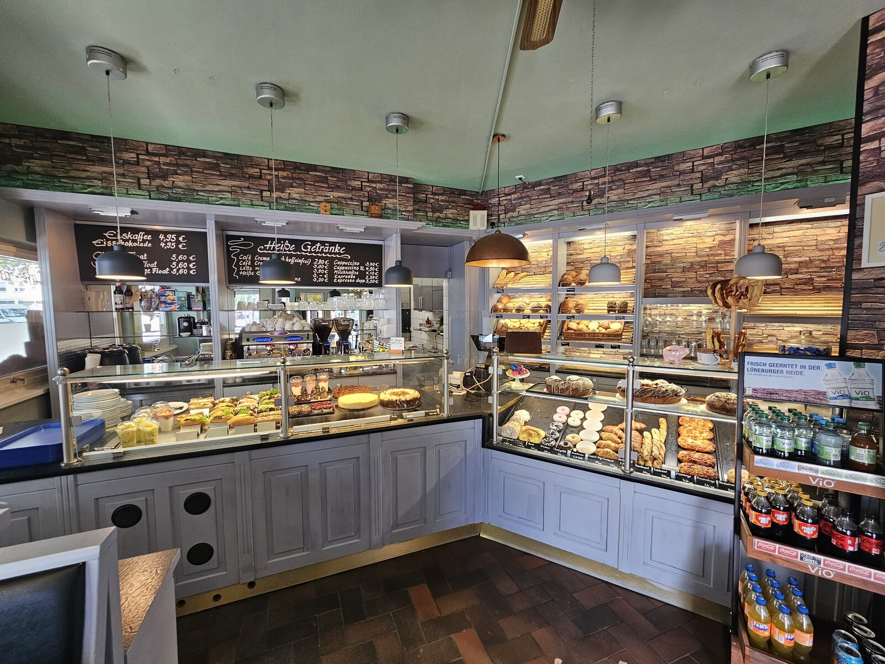
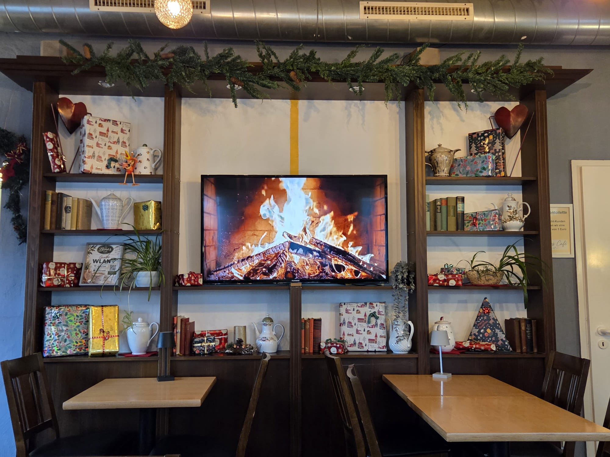
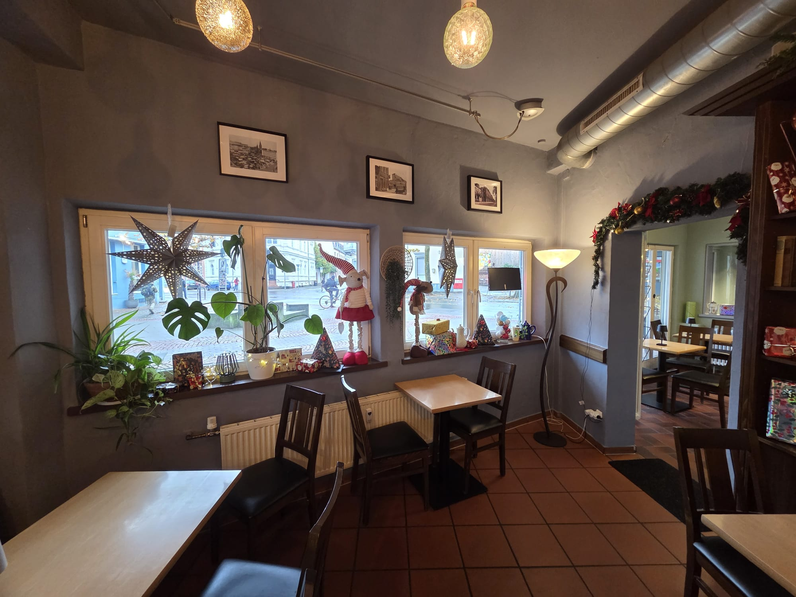

Frisch gebrühter Kaffee, leckeres Essen und ein gemütlicher Ort zum Entspannen.
Besuchen Sie uns
Bines Cafe ist ein freundlicher Treffpunkt in der Nachbarschaft, der handgemachten Kaffee, hausgemachte Leckereien und kleine Snacks serviert. Ob zum Plaudern mit Freunden oder zum Arbeiten – unser Café ist der perfekte Ort zum Entspannen.



Ein paar Eindrücke aus unserem Café – von der gemütlichen Theke über das knisternde Kaminfeuer bis zur winterlichen Weihnachtsdekoration.